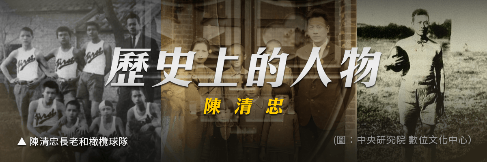

淡江橄欖球名人堂

陳清忠出身於 1895 年的五股，父親陳榮輝在新店教會擔任駐堂牧師，陳清忠有三個姐姐一個哥哥，1898 年父親病逝，1903 年與哥哥陳清義前往艋舺，後來就讀臺灣總督府國語學校第二附屬學校，畢業後前往牛津學堂，1912 年獲得教會派遣前往日本深造，進入日本同志社大學就讀。
1916 年進入同志社大學英文系，從日歸臺後與謝香結婚，婚後進入淡江中學任教英文科，同時也利用課餘時間來去推廣橄欖球運動以及男聲合唱團，1923 年陳清忠於淡江中學創立臺灣第一個橄欖球隊，1924 年 1 月 12 日於臺北市參加第一場比賽以 3：0 的成績獲勝，1930 年因為跟當時校長偕威廉（George William Mackay）因訓練橄欖球隊的方式有些分歧，另一方因為淡江中學被日本政府強制接收，所以決定辭職離開淡江中學。
後來在有坂一世（ありさかいせい）1890年5月22日－1980年11月4日，日本秋田縣人，臺灣日治時代教育人物，曾任淡江中學校長校長的聘任下，陳清忠再次回到淡江中學任教英文，1945 年擔任淡水女子中學的教務主任，1948 年改名為純德女子中學，獨立經營，陳清忠成為本校校長。
1951 年 2 月因身體因素辭退校長一職。離開純德後，陳清忠被聘請為顧問，也曾到雙連教會旁的神學院教英文，1960 年 4 月 6 日陳清忠因為心肌梗塞過世。